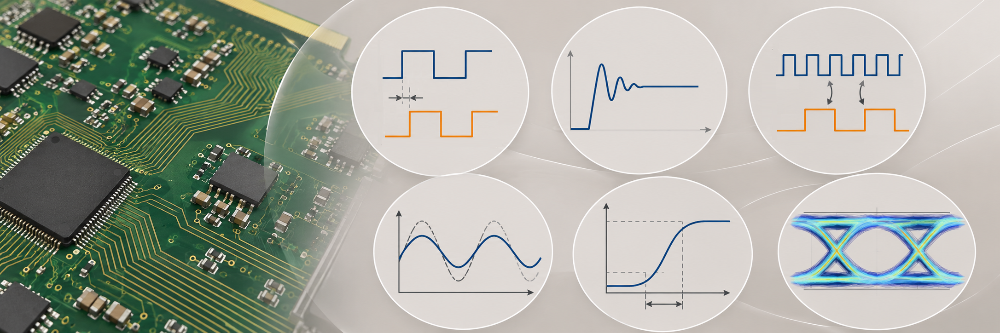
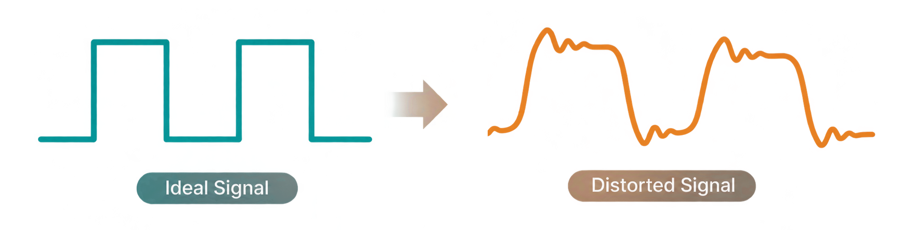
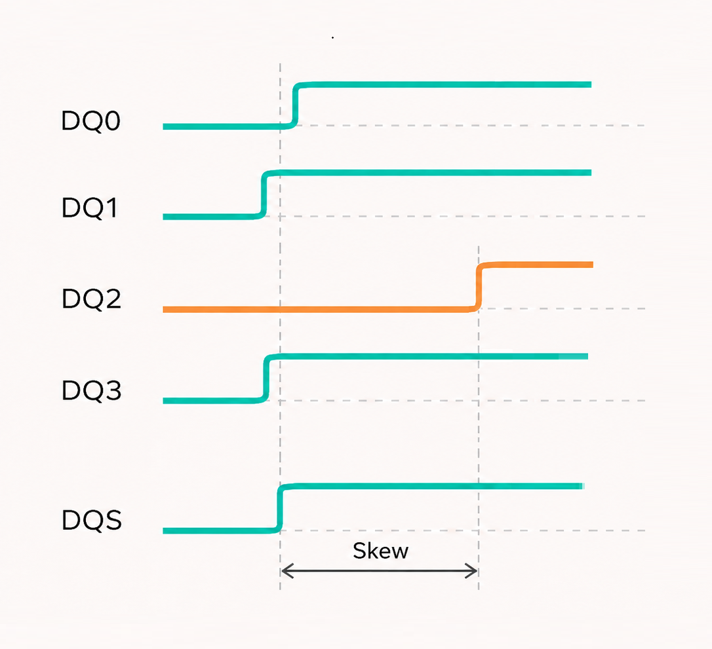
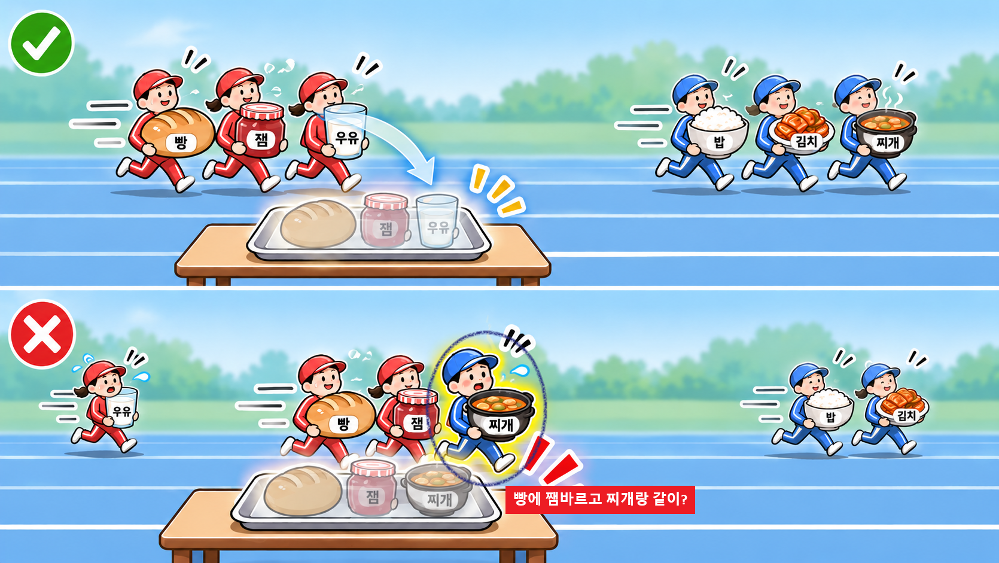
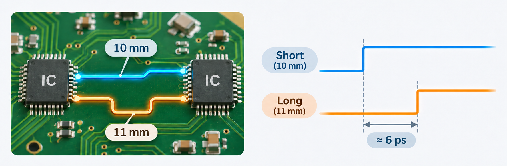
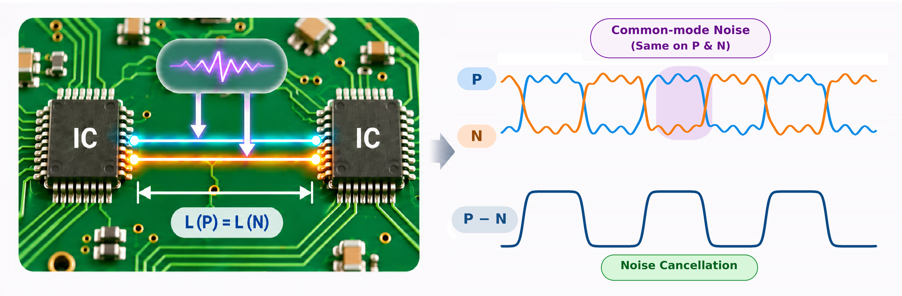
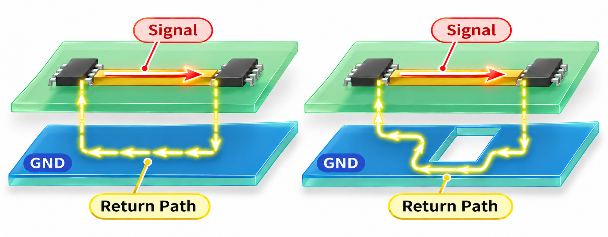
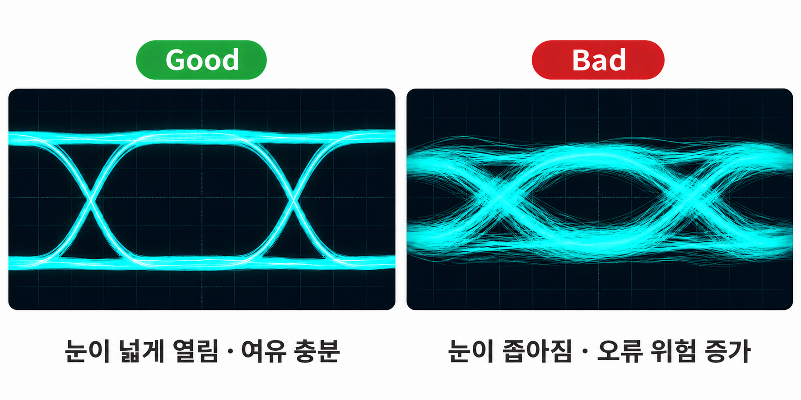
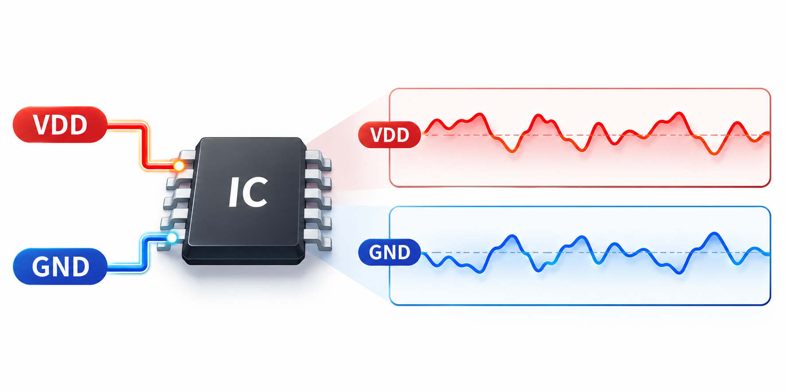
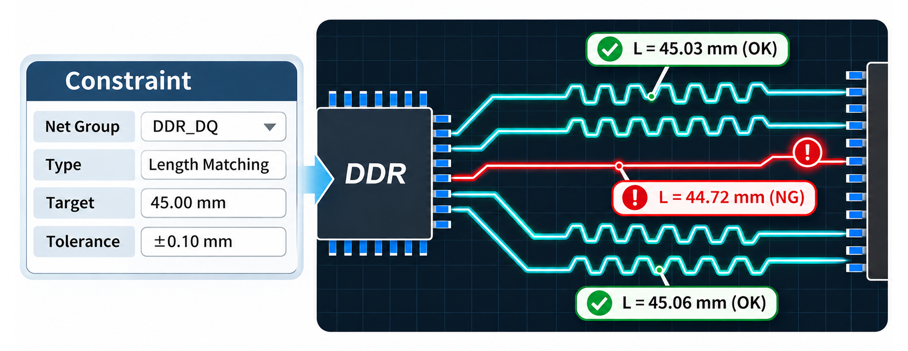

열심히 길이를 맞춰서 배선했는데도 잘 작동하지 않는 이유

전자제품의 성능이 높아지면서 PCB 설계에서 고속 신호(High-Speed Signal)의 설계가 더욱 중요해지고 있습니다.
CPU와 메모리를 연결하는 DDR, 그리고 CPU와 GPU·SSD 등을 연결하는 PCIe는 대표적인 고속 인터페이스입니다. 컴퓨터와 서버뿐 아니라 자동차, 통신장비, 산업용 장비에서도 널리 사용되고 있습니다.
그런데 고속 PCB 설계는 단순히 부품을 배치하고 연결하는 것만으로 끝나지 않습니다. 회로도에서도 꼼꼼히 연결하고 PCB Layout에서 배선 길이까지 맞췄는데도 실제 제품에서는 데이터 오류가 발생하거나 시스템이 불안정해지는 일이 있습니다.
왜 이런 문제가 생길까요?
신호의 속도가 빨라지면 PCB 배선은 더 이상 단순한 연결선에 그치지 않습니다. 같은 회로라도 배선을 어떻게 설계하느냐에 따라 신호 품질과 데이터 전송의 안정성이 달라질 수 있기 때문입니다.
이번 글에서는 DDR과 PCIe를 중심으로 고속 신호 PCB 설계가 어려운 이유와 이를 해결하기 위한 설계·검증 기술을 살펴보겠습니다.
1. 고속 PCB 설계는 무엇이 다를까요?
낮은 속도의 디지털 신호는 부품들이 전기적으로 연결되고 기본적인 조건을 만족하는 정도로 신호가 잘 전달되고 정상적으로 작동할 수 있습니다. 하지만 신호의 속도가 높아지면 배선의 길이와 폭, 주변의 다른 신호, PCB의 층 구조 등 여러 요소가 신호 품질에 큰 영향을 미칩니다.
대표적인 현상은 다음과 같습니다.
- 전파 지연(Propagation Delay): 신호가 배선을 통과하는 데 시간이 걸립니다. 동시에 처리되어야 하는 신호들이 불안정하게 처리될 위험이 생깁니다.
- 반사(Reflection): 신호 경로의 임피던스가 달라지는 지점에서 일부 신호가 되돌아옵니다. 되돌아온 신호가 원래 신호와 겹치면서 파형이 왜곡됩니다.
- 누화(Crosstalk): 인접한 배선의 영향으로 신호에 잡음이 발생합니다. 데이터 값이 잘못 전달될 수 있습니다.
- 신호 손실(Loss): 배선과 절연체의 특성으로 인해 신호가 약해지고 파형이 변형됩니다. 수신 측에서 신호를 정확하게 구별하기 어려워질 수 있습니다.
이와 같은 현상으로 고속 신호의 파형이 변형될 수 있고, 신호를 수신하는 시점에 불안정한 상태가 될 수 있습니다.

그리고 고속 신호에서는 주파수(결국 신호의 속도)뿐 아니라 신호가 0에서 1로 바뀌는 데에 걸리는 시간, 즉 상승시간(Rise Time)도 중요합니다.
결국 고속 PCB 설계에서는 전기적으로 연결되어 있다는 것 만으로는 신호가 정상적으로 전달되는 것을 보장할 수 없습니다.
2. DDR — 여러 신호가 약속된 시간에 도착해야 합니다.
DDR(Double Data Rate)은 CPU, 메모리 컨트롤러와 DRAM 사이에서 데이터를 주고받는 대표적인 메모리 인터페이스입니다.
DDR은 기준이 되는 클록(CLOCK) 신호의 상승과 하강 시점을 모두 이용해 데이터를 송·수신하는데, 중요한 특징 중 하나는 여러 데이터 신호가 병렬로 함께 전달된다는 점입니다.
아이돌 그룹이 박자에 맞춰 군무를 추듯, DDR 신호를 이루는 데이터(DQ), 데이터 스트로브(DQS), 클록(CK), 주소 및 명령 신호 등이 서로 정해진 타이밍 관계를 유지해야 합니다.
여러 신호 중 일부가 너무 일찍 또는 늦게 도착하면 데이터를 정확하게 읽기 어려워지고 오류가 발생할 수 있습니다.

비유하자면 여러 사람이 음식을 하나씩 들고 와서 정해진 시간에 한꺼번에 테이블에 올려놓아야 하는 상황과 비슷합니다. 누군가 지나치게 늦게 도착하면 식사를 준비하는 과정에 차질이 생길 수 있습니다.

이처럼 신호 간 도착 시간의 차이를 Skew라고 합니다.
PCB에서 신호가 이동할 때에는 일정한 속도를 가집니다. 예를 들어 특정 PCB 구조에서 신호의 전파지연이 약 6ps/mm 라면, 1mm를 이동하는 데에 6ps 가 걸리는 것입니다.
DDR5 처럼 여러 개의 신호 데이터가 매우 빠른 속도로 함께 전달된다면 수 ps(pico second, 10-12초)의 차이도 무시하기 어렵습니다. 즉, 함께 전달되어야 하는 신호들의 배선 길이가 다르다면 오류가 발생할 수 있습니다.

다만 모든 신호의 길이를 똑같이 맞춰야 하는 것은 아닙니다. 데이터(DQ)는 DQS를 기준으로, 주소 및 명령 신호는 CK를 기준으로 정해진 타이밍 조건을 만족해야 합니다.
3. PCIe — 차동 신호가 타이밍을 맞춰 전송되어야 합니다.
PCIe(Peripheral Component Interconnect Express)는 CPU와 GPU, SSD 등을 연결하는 대표적인 고속 직렬 인터페이스입니다.
DDR이 여러 데이터 신호를 병렬로 전달하는 방식이라면, PCIe는 하나 이상의 고속 직렬 Lane을 이용합니다.
각 Lane은 P(Positive)와 N(Negative)으로 구성된 차동 신호(Differential Signal)를 사용합니다. 두 신호의 전압 차이로 데이터를 판별하기 때문에 외부 잡음에 강하다는 장점이 있습니다.

이때 하나의 차동쌍을 이루는 P와 N의 배선길이 차이가 커지면 신호의 도착 시간이 달라져 오류가 발생할 수 있으므로, 차동쌍 내부의 배선 길이 정합이 중요합니다.
4. 그럼 배선 길이만 잘 맞춰주면 될까?
앞서 설명되었듯이 배선의 길이가 달라지면 신호가 도착하는 시간도 달라집니다.
일반적인 FR-4 PCB에서 배선이 1mm 길어지면 신호의 전파 지연은 약 6~7ps 발생합니다.
고속 인터페이스에서는 데이터가 매우 빠른 속도로 전달되기 때문에 미세한 시간 차이도 중요합니다. 따라서 PCB 배선 길이의 차이에도 주의를 기울여야 합니다.
PCB에서 필연적으로 신호 왜곡 발생하므로, 순간순간의 신호 변화가 안정되는 데에 걸리는 시간을 감안하면 0.1mm의 차이도 중요할 수 있습니다.
| 인터페이스 | 전송 속도 | UI (데이터 간격) |
|---|---|---|
| DDR4-3200 | 3.2Gb/s | 약 313ps |
| DDR5-6400 | 6.4Gb/s | 약 156ps |
| PCIe Gen4 | 16GT/s | 62.5ps |
| PCIe Gen5 | 32GT/s | 31.25ps |
"하지만, 배선 길이를 똑같이 맞추는 것 만으로는
신호의 품질까지 보장되지는 않습니다."
배선들이 거쳐가는 Layer의 구조가 다르거나 Via를 통과하는 방식이 다르면 전파 지연과 신호 품질이 달라질 수 있고, IC 부품 내부의 배선 지연을 고려해야 할 수도 있습니다.
따라서 고속 PCB 설계에서는 단순한 길이 정합(Length Matching) 뿐 아니라 신호들의 실질적인 전파 지연 (Delay) 및 타이밍 여유 범위(Timing Margin)를 함께 고려하여 조건을 만족하도록 배선하는 것이 중요합니다.
신호 품질을 결정하는 다양한 요소들
이렇게 매우 높은 속도로 전송되는 신호는 타이밍 이외에 작은 손실이나 왜곡도 큰 문제가 될 수 있습니다.
DDR과 PCIe에는 데이터 타이밍과 신호 품질을 보정하는 여러 기술도 적용됩니다. 하지만 보정 기능에도 한계가 있으므로 송신기부터 수신기까지 전체 전송 경로(Channel)의 품질을 관리해야 합니다.
신호가 정확하고 안정적으로 전달되기 위한 주요 요소는 다음과 같습니다.
- PCB 적층 구조(Stack-up): 배선층과 절연체 구조에 따른 전파 지연, 임피던스 및 손실
- 임피던스: 배선이나 연결 구조가 달라지면서 발생하는 신호 왜곡
- Return Path: 신호의 귀환 전류가 흐르는 경로의 연속성
- Via와 Connector: 연결 구조에서 발생하는 임피던스 불연속과 추가 손실
- Crosstalk: 인접한 배선의 신호들 사이에서 발생하는 전자기적 간섭
- 전송 손실: 배선을 따라 이동하면서 신호가 약해지는 현상
- IC Package: 칩 내부 연결 구조에서 발생하는 추가 지연과 손실
결국 고속 PCB 설계의 목표는 단순히 배선들의 길이만을 맞추는 것이 아니라,
수신기에서 신호를 정확하고 안정적으로 읽을 수 있도록 만드는 것입니다.
5. 임피던스와 Return Path가 중요한 이유
DDR과 PCIe는 신호 전달 방식이 다르지만, 공통적으로 임피던스와 Return Path를 중요하게 다룹니다.
5-1. 임피던스 — 신호가 지나가는 길의 특성
고속 PCB 에서 배선은 단순한 구리선이 아니라 전송선로(Transmission Line)처럼 동작합니다. 전송선로란, 그 안에서 신호가 유한한 속도로 전파되며, 배선의 구조와 주변 절연체 등에 따라 신호의 전달 특성이 달라지는 경로를 뜻합니다.
이때 중요한 특성 중 하나가 특성 임피던스(Characterisitic Impedance)입니다. 특성 임피던스는 배선 폭과 두께, 기준면과의 거리, 절연체의 두께 등 여러 조건에 의해 결정됩니다.
마치 수도관의 굵기가 갑자기 달라지는 지점에서 물의 압력파 일부가 되돌아오는 현상과 같이, 신호가 이동하는 경로에서 임피던스가 달라지는 곳이 있으면 신호의 일부가 반사되고, 반사된 신호가 원래의 신호와 중첩되어 파형이 왜곡될 수 있습니다.
임피던스는 PCB의 층 구조(Stack-up), 절연체 두께, 재료 특성, 구리 두께 등에도 영향을 받습니다. 따라서 고속 PCB를 설계할 때에서는 제조업체와 협의하여 Stack-up과 임피던스 목표를 설정하는 것이 필요합니다.
즉, PCB CAD에서 설계한 배선과 실제 제조된 PCB의 전기적 특성이 일치하도록 관리하는 것도 중요합니다.
5-2. Return Path — 신호에는 돌아오는 길도 필요합니다
전기 신호가 전달되려면 전류가 순환할 수 있는 경로가 필요합니다. 신호 전류에 대응하는 귀환 전류(Return Current)가 흐르는 경로를 Return Path라고 합니다.
고속 신호 배선이 연속적인 GND Plane 위에 있다면 고주파 귀환 전류는 일반적으로 신호 배선 가까운 영역에 집중됩니다.
그런데 신호 배선 아래에 GND Plane이 충분히 확보되어 있지 않다면 어떻게 될까요?
귀환 전류가 가까운 경로를 따라 흐르기 어려워지면 다른 경로로 우회하게 됩니다. 귀환 전류가 우회하면서 신호 경로의 임피던스와 전자기적 특성이 달라지고, 신호 품질의 저하, EMI 문제로 이어질 수 있습니다.

Return Path는 눈에 보이는 신호 배선만큼이나 중요한 전기적 설계 요소입니다.
6. PCB Layout 규칙만으로 설계 품질을 보장할 수 있을까요?
PCB CAD에는 설계 오류를 방지하기 위한 DRC(Design Rule Check) 기능이 있습니다.
DRC는 배선 폭과 간격, Via 크기, 부품 사이의 간격 등 정의된 설계 규칙이 위반되지 않았는지 확인합니다. 고급 PCB CAD에서는 고속 신호의 길이 정합(length matching)과 배선 구조에 대한 검사도 지원합니다.
그렇다면 DRC를 통과한 PCB는 정상적으로 동작한다고 볼 수 있을까요?
반드시 그렇지는 않습니다. 예를 들어 PCIe 차동 신호의 길이와 배선 간격을 규칙에 맞게 설계하여 DRC는 정상적으로 통과했더라도, 여러 Via를 통과하면서 신호 반사가 커지거나 긴 배선으로 인해 신호 손실이 지나치게 커서 PCB가 동작하지 않을 수 있습니다.
DRC(Design Rule Check)는 말 그대로 정의된 설계 규칙을 지켰는지 확인하는 기능일 뿐, 신호가 실제로 어떤 파형으로 전달되는지까지 모두 보장하지는 않습니다. 즉, PCB Layout 에서 DRC로 정의된 기하학적인 규칙을 모두 만족했더라도 실제로는 수신기에서 요구하는 신호 품질을 확보하지 못할 수 있습니다.
따라서 고속 PCB에서는 물리적인 설계 규칙 검사와 함께, 신호가 올바르게 전달되는 지에 대한 전기적 특성도 검증이 필요합니다.
7. SI/PI 시뮬레이션 — 실제 제작 전에 문제를 확인합니다
PCB를 설계하여 실물을 제작했는데 정상적으로 작동하지 않으면 다시 작업하는 데에 많은 시간과 비용이 발생합니다. 그러면 고속 PCB를 설계할 때에 신호가 제대로 전달되고 전원이 안정적으로 공급되는지 미리 확인할 수 있을까요?
이를 위해 사용하는 기술이 SI(Signal Integrity)와 PI(Power Integrity) 해석입니다.
SI는 신호가 전달되는 과정에서 발생하는 신호의 왜곡과 타이밍 문제를 확인하고, PI는 IC에 전원이 공급되는 과정에서 발생하는 전압 변동과 잡음 등을 분석합니다. 두 기술은 고속 PCB의 전기적 문제를 설계 단계에서 미리 발견하고 개선하는 데 중요한 역할을 합니다..
7-1. SI 해석으로는 무엇을 확인할까요?
SI 해석에서는 PCB의 배선 구조, IC의 전기적 모델, Via, 커넥터 등의 특성을 반영하여 신호의 전달 과정을 분석합니다.
DDR 신호에 대해서는 주로 데이터와 스트로브 신호의 타이밍 관계, 신호 파형, 수신기의 타이밍 여유 등을 확인하고, PCIe 신호에서는 주로 채널 손실, 반사, 누화(Crosstalk), Equalization의 효과 등을 분석합니다.
대표적인 분석 결과 중 하나가 Eye Diagram입니다.

Eye Diagram은 시뮬레이션으로 예측한 여러 비트 구간의 신호 파형을 겹쳐 표시하여 신호의 왜곡과 타이밍 오차를 보여줍니다. 눈 모양이 크게 열려 있을수록 일반적으로 신호 품질이 양호하다는 의미로, 최종 적합성은 인터페이스별 기준에 따라 판단합니다.
SI 해석은 PCB를 실제로 제작하기 전에 신호 품질의 잠재적인 문제를 미리 파악하는 데 도움이 됩니다.
문제가 발견되면 배선의 길이, Layer 구조, Via, 종단 조건, 부품 배치 등을 수정하여 설계를 개선할 수 있습니다.
7-2. PI 해석은 왜 할까요?
고속 IC는 짧은 시간에 순간적으로 전류를 많이 소비할 수 있습니다. 특히 DDR 메모리나 고성능 프로세서에서는 여러 작업을 동시에 수행하면서 전원에 순간적인 부하 변화를 일으킵니다.
전원을 공급하는 경로의 임피던스가 높거나 디커플링 커패시터의 구성·배치가 적절하지 않으면 전원 전압이 출렁거릴 수 있습니다. 이러한 전원 잡음은 신호의 타이밍과 품질에 영향을 주어 데이터 전송의 안정성을 떨어뜨릴 수 있습니다.

PI 분석에서는 주로 다음 사항을 확인합니다.
- 전원 공급망(PDN, Power Distribution Network)의 임피던스 특성
- 전원과 GND Plane의 구조
- 디커플링 커패시터의 구성과 배치
- 부하 변화에 따른 전압 변동
- 전원 경로에서 발생하는 전압 강하
SI는 데이터 신호가 지나가는 길을 검토하고, PI는 그 데이터를 처리하는 회로가 안정적인 전원을 공급받는지 검토한다고 이해할 수 있습니다.
고속 디지털 회로에서는 SI와 PI가 서로 영향을 주므로 두 가지의 분석을 독립적으로 생각할 수 없습니다.
시뮬레이션도 만능은 아닙니다
SI/PI 해석의 결과는 사용된 모델과 입력 조건의 정확도에 영향을 받습니다. IC의 모델, PCB 재료, Stack-up, 커넥터 특성 등의 조건이 실제와 다르거나, 제조 오차에 의해 분석 결과에 차이가 발생할 수 있습니다.
따라서 시뮬레이션 결과가 실제 측정과 완전히 동일할 수는 없으며, 설계 단계에서 문제를 예방하고 검증할 범위를 좁히는 수단으로 활용하는 것이 바람직합니다.
8. Constraint Management — 복잡한 설계 조건을 체계적으로 관리합니다
고속 PCB를 설계할 때에는 지켜야 할 조건이 아주 많고 복잡합니다.
DDR 신호의 경우 주로 신호그룹별 타이밍(길이) 정합 조건, 배선 구조, 임피던스 등의 조건을, PCIe 신호에서는 주로 차동 배선의 임피던스, 길이와 지연시간, Via 사용, 채널 손실, 배선 간격 등의 조건을 고려해야 합니다.
이러한 여러 조건들을 PCB 설계자가 경험에 의존해 일일이 기억하고 관리하기는 어렵습니다. 이를 체계적으로 관리하는 기능이 Constraint Management입니다.
8-1. Constraint는 설계하면서 지켜야 할 조건입니다
Constraint는 설계 제약조건 또는 설계 규칙을 의미합니다. 예를 들어 다음과 같은 조건을 정의할 수 있습니다.
| 항목 | Constraint 예시 |
|---|---|
| DDR 데이터 신호 | DQ와 DQS 사이의 허용 타이밍 차이 |
| PCIe 차동 신호 | 목표 차동 임피던스 |
| 고속 신호 | 배선간 간격(이격거리)과 최대 허용 배선 길이 |
| Via | 최대 via 개수 또는 구조에 대한 제한 |
| Layer | 허용 배선층과 기준면 조건 |
이러한 값들은 인터페이스 규격, IC 제조사의 설계 지침, PCB 구조 및 분석 결과에 따라 설정해야 합니다.
Constraint Management 시스템을 통해 이러한 규칙을 특정 신호 또는 신호 그룹에 적용하면, Layout 설계툴에서 위반 여부를 확인하면서 설계할 수 있습니다.

8-2. 규칙의 출처와 변경 이력도 필요합니다
PCB 를 설계할 때에 어떤 규칙이 어느 부품의 설계 지침으로부터 가져왔는지, 어떤 시뮬레이션 결과를 바탕으로 결정되었는지, 누가/언제 설정했는지 추적할 필요가 있습니다.
예를 들어 DDR 메모리 부품을 다른 것으로 변경하면서 기존 Constraint를 확인 없이 그대로 사용하면 문제가 발생할 수 있습니다. 변경된 부품의 타이밍 조건이나 전기적 특성이 기존 부품과 다를 수 있기 때문입니다.
PCB의 Layer Stack-up이 변경되면 배선 폭이나 간격을 다시 검토해야 할 수 있습니다.
따라서 설계 데이터와 Constraint가 분리되어 관리되면 변경 사항을 놓치기 쉽습니다. Constraint를 제대로 활용하려면 설계 규칙을 단순히 저장하는 것을 넘어, 부품·회로·PCB·시뮬레이션 데이터와 규칙을 연결하고 변경 영향을 추적할 수 있어야 합니다.
9. AI 시대, 고속 PCB 설계는 어떻게 달라질까요?
최근 PCB CAD와 EDA 분야에서는 AI를 활용하여 설계 생산성과 검증 효율을 높이려는 시도가 확대되고 있습니다.
고속 PCB 설계에서도 다음과 같은 활용이 기대됩니다.
- 설계 규칙의 자동화: 부품 데이터시트와 설계 가이드에서 필요한 정보를 수집하여 Constraint 설정을 지원
- 설계 최적화 지원: 배선 구조와 SI/PI 분석 결과를 검토하여 개선할 부분을 제안
- 변경 영향 분석: 부품이나 PCB 구조가 변경되었을 때 영향을 받는 신호와 재검증해야 하는 항목을 식별
특히 AI가 설계 데이터와 시뮬레이션 결과를 함께 분석할 수 있다면 반복적인 검토 작업을 줄이고 설계 변경에 따른 위험을 더 빠르게 파악할 수 있을 것입니다.
이러한 기능을 실현하려면 정확한 부품 정보, PCB 데이터, Constraint, 시뮬레이션 결과 등이 서로 연결될 수 있도록 잘 관리되어야 합니다.
AI 발전의 혜택을 제대로 누리기 위해서는 설계 데이터의 체계적인 관리가 중요한 이유입니다.
마무리 — 고속 PCB 설계는 규칙 준수만큼 검증도 중요합니다
고속 인터페이스 신호인 DDR과 PCIe는 매우 높은 수준의 전기적 설계 품질을 요구합니다.
두 인터페이스 모두 배선 길이 뿐 아니라 임피던스와 Return Path를 고려해야 하며, PCB Layout 규칙만으로 모든 문제를 검증할 수는 없습니다.
따라서 고속 PCB를 설계할 때에는 Constraint Management로 설계 제약 조건을 관리하고, SI/PI 해석으로 전기적 특성을 검증하며, 관련 데이터를 체계적으로 연결해야 합니다.
고속 PCB 설계는 빠르고 정확하게 배선하는 것에서 끝나지 않습니다. 신호가 실제 제품에서 안정적으로 전달될 수 있도록 설계하고, 그 결과를 검증하는 것이 핵심 경쟁력이 될 것입니다.